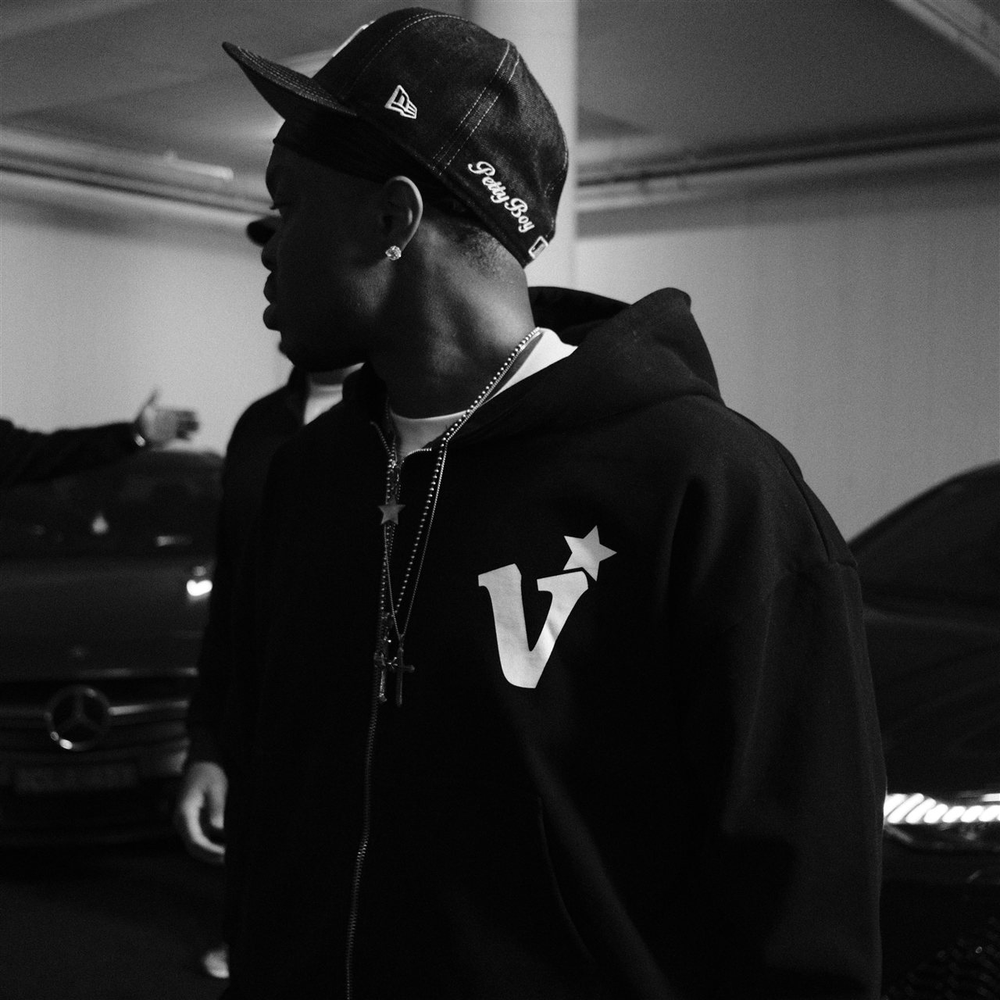
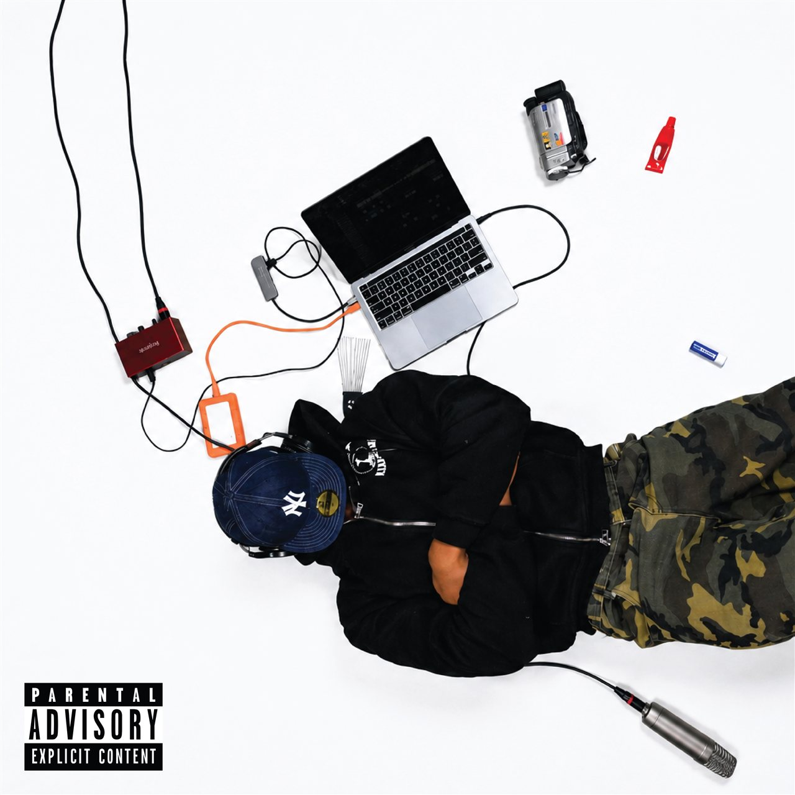
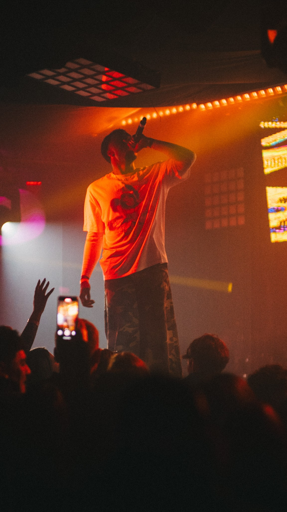
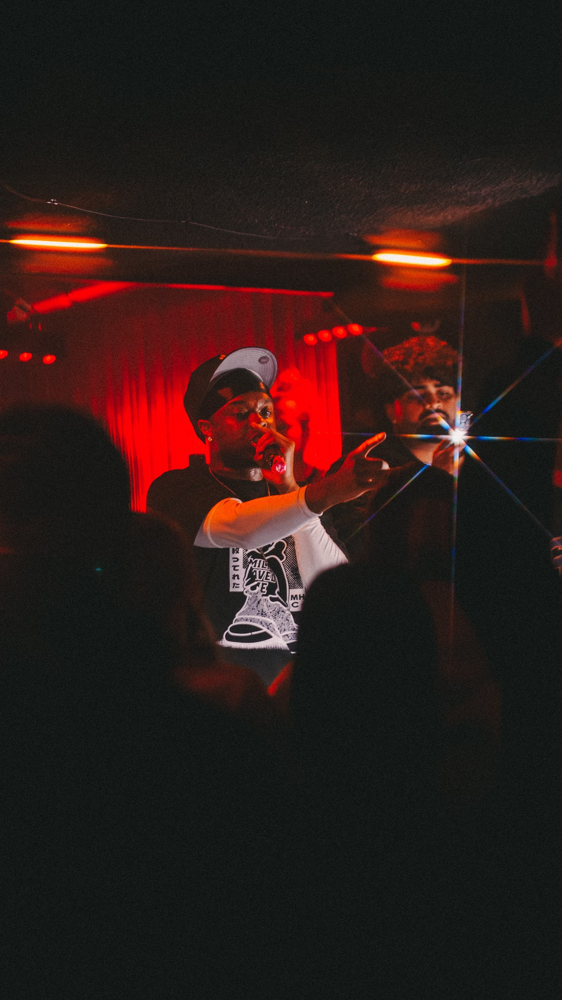
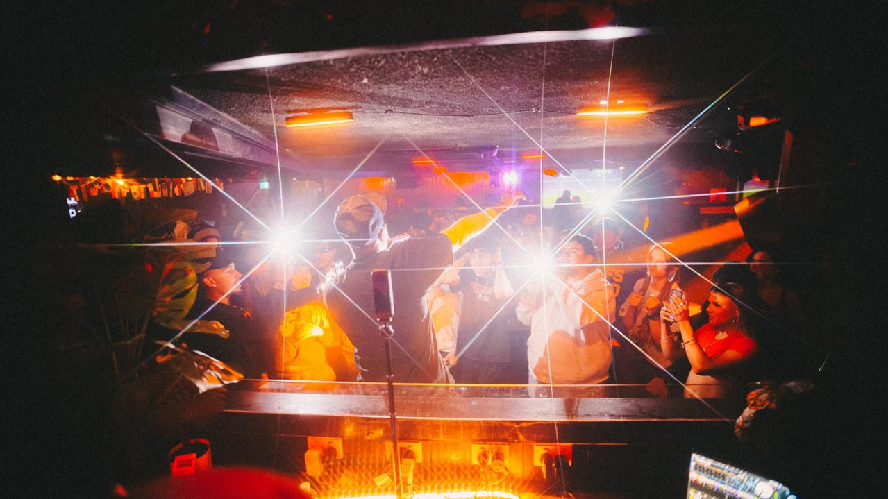
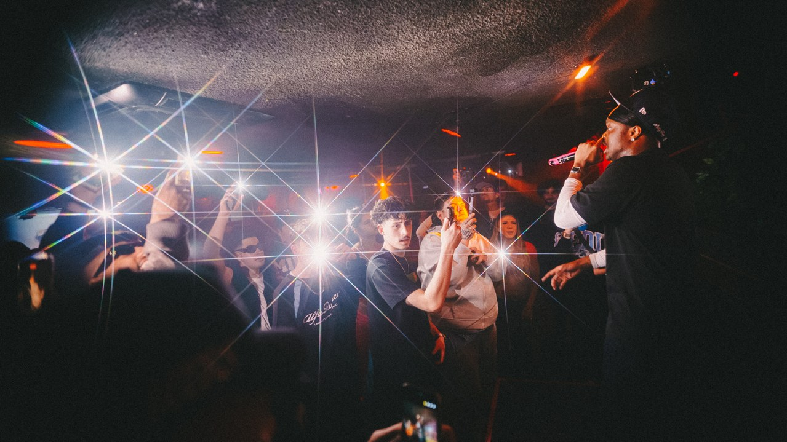

SAINT KWE
SCROLL TO LISTEN

LISTEN TO THE NEW PLAYLIST
529
09

SCENARIO
04
WHO DEM BOYS
15
NORTHSIDE VETERAN
 WHO DEM BOYSWATCH ON YOUTUBE ↗
WHO DEM BOYSWATCH ON YOUTUBE ↗
 SUMMER AIN’T OVERWATCH ON YOUTUBE ↗
SUMMER AIN’T OVERWATCH ON YOUTUBE ↗OFF
THE RECORD.
In the studio.
On the street.
Under the lights.





